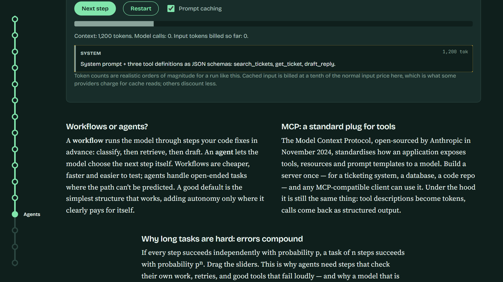
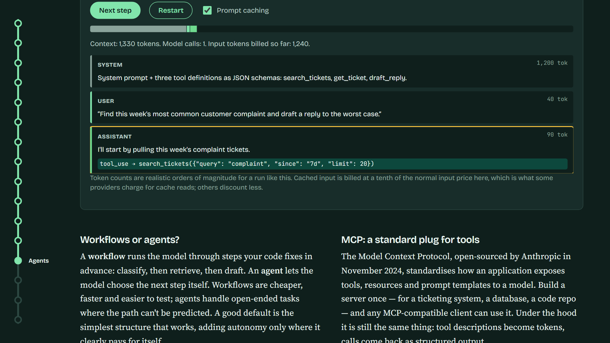
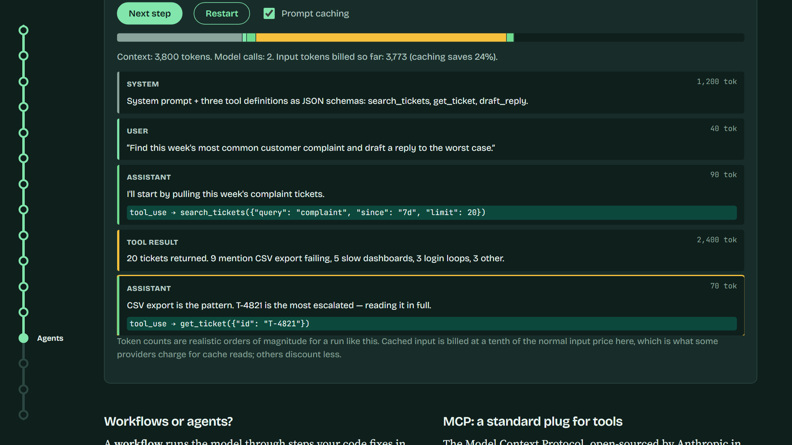
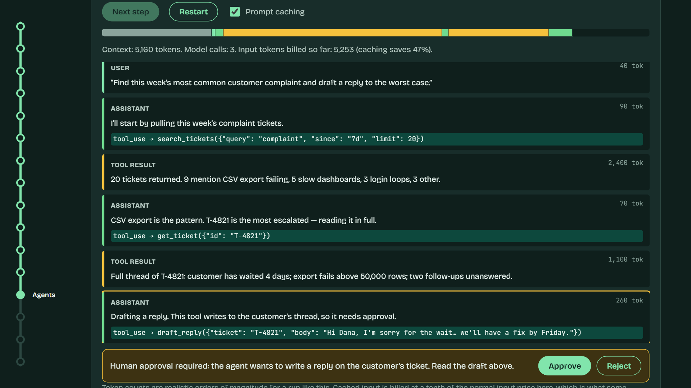
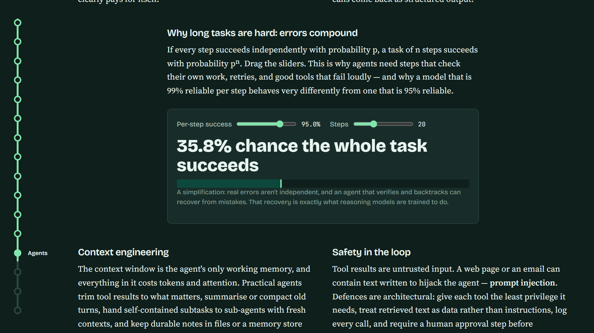
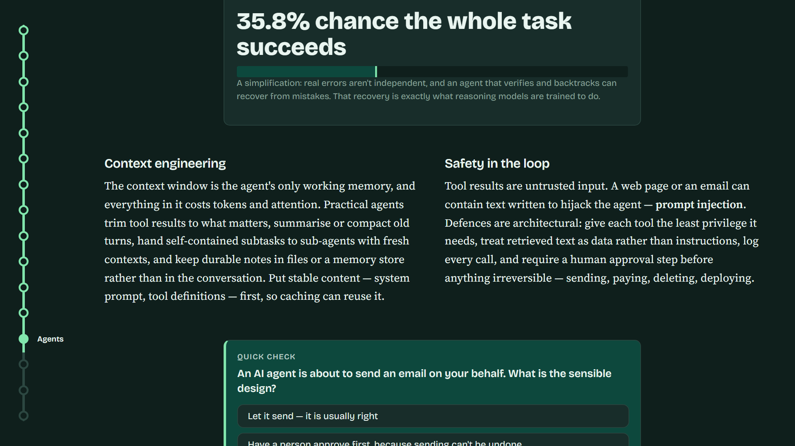

Tool definitions and messages: all text
Predicts the next tokens, as always
in a strict format
Parses the call, runs the real function





Cheaper, faster, easier to test
Still just predicted tokens: a tool call or an answer. Handles open-ended tasks.

Open-sourced by Anthropic, November 2024